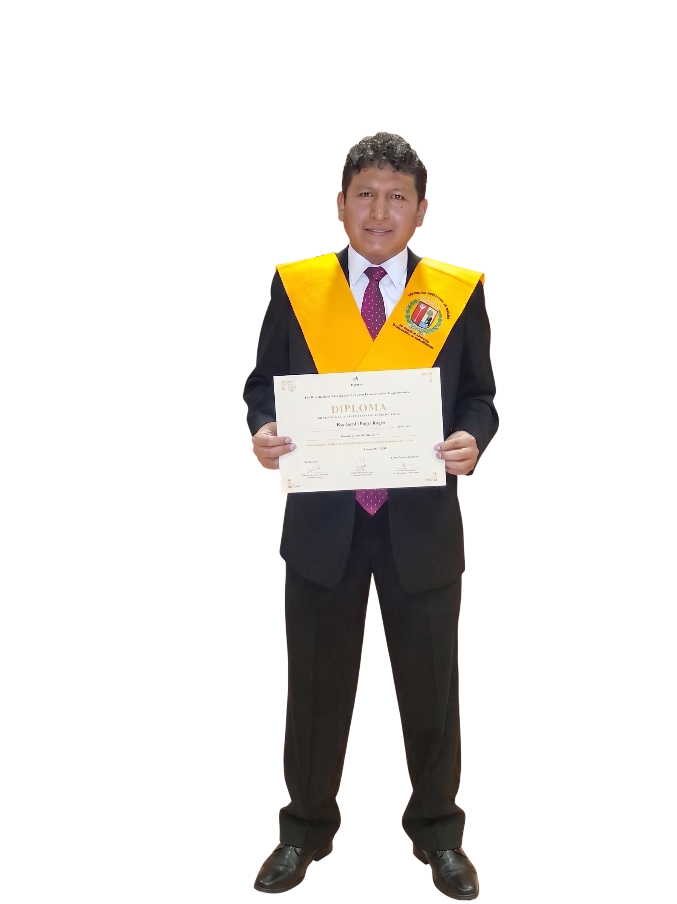

Dr. CHOQUE VARGAS
JULIO CESAR
Doctoris Scientiae y Docente Asociado en la UNA Puno, Past Decano del Colegio de Contadores Públicos y Ex Director de la Escuela Profesional de Contabilidad. Máster por la Universidad Autónoma de Madrid (España).
Sobre Mí y Credenciales Académicas
Trayectoria distinguida en docencia universitaria, consultoría tributaria y alta dirección financiera.
Dr. CHOQUE VARGAS JULIO CESAR
Doctoris Scientiae • Past Decano CCP • Docente Asociado
Dr. CHOQUE VARGAS JULIO CESAR
Docente Asociado • Past Decano CCP
Ex Director Escuela Contabilidad • UNA PunoTrayectoria Académica & Liderazgo Institucional
El Dr. Julio César Choque Vargas es Doctoris Scientiae en Contabilidad y Administración por la Universidad Nacional del Altiplano (UNA Puno), con Máster Universitario Oficial en Desarrollo Económico y Políticas Públicas por la Universidad Autónoma de Madrid (España), Magíster en Auditoría y Tributación, y Segunda Especialidad en Didáctica Universitaria.
Cuenta con una destacada trayectoria en la educación superior y en la gestión institucional: es Docente Asociado a tiempo completo en la UNA Puno, ha ejercido la Dirección de la Escuela Profesional de Contabilidad, el decanato como Past Decano del Colegio de Contadores Públicos, y la jefatura como Contador General de la Universidad Nacional del Altiplano.
Doctorado & Máster Oficial
Doctoris Scientiae (UNA Puno)
Máster Univ. Autónoma de Madrid (España)Docente Universitario
Docente Ordinario Asociado T.C.
Segunda Especialidad Didáctica UniversitariaDirector de Escuela Profesional
Escuela Profesional de Contabilidad
Facultad de Ciencias Contables (UNA Puno)Colegio de Contadores Públicos
Past Decano Departamental
Contador Público Colegiado HabilitadoÁreas de Especialización y Consultoría
Servicios estructurados para asesoría corporativa, gestión tributaria y auditoría de alto nivel.
1. Gestión Tributaria & SUNAT
Planeamiento fiscal preventivo, atención a fiscalizaciones y auditorías tributarias.
- Planeamiento fiscal estratégico y diagnóstico preventivo.
- Liquidación mensual y Declaración Anual del Impuesto a la Renta.
- Acompañamiento en fiscalizaciones y requerimientos SUNAT.
2. Contabilidad Financiera & NIIF
Elaboración y análisis de Estados Financieros bajo normas internacionales.
- Formulación de Estados Financieros auditables (NIIF / IFRS).
- Conciliaciones bancarias y cierres contables mensuales.
- Registros electrónicos SIRE (RVIE/RCE) y PLE.
3. Gestión Laboral & Nóminas
Administración de planillas y cumplimiento estricto con SUNAFIL.
- Cálculo de nóminas, gratificaciones, CTS y liquidaciones.
- Declaración en T-Registro, PLAME y plataformas AFPnet/ONP.
- Auditoría preventiva ante inspecciones laborales.
4. Finanzas & Costos Corporativos
Modelos de costos, flujo de caja proyectado y análisis de EBITDA.
- Estructura de costos por procesos y órdenes de producción.
- Proyección de Flujo de Caja y presupuesto operativo.
- Ratios financieros y rentabilidad por centro de costo.
5. Auditoría, Peritaje & Reconstrucción Contable
Auditorías integrales, control interno y regularización de contabilidades atrasadas.
- Auditoría forense y peritaje contable para controversias.
- Reconstrucción contable de ejercicios anteriores y rectificatorias.
- Tomas de inventarios físicos y saneamiento patrimonial.